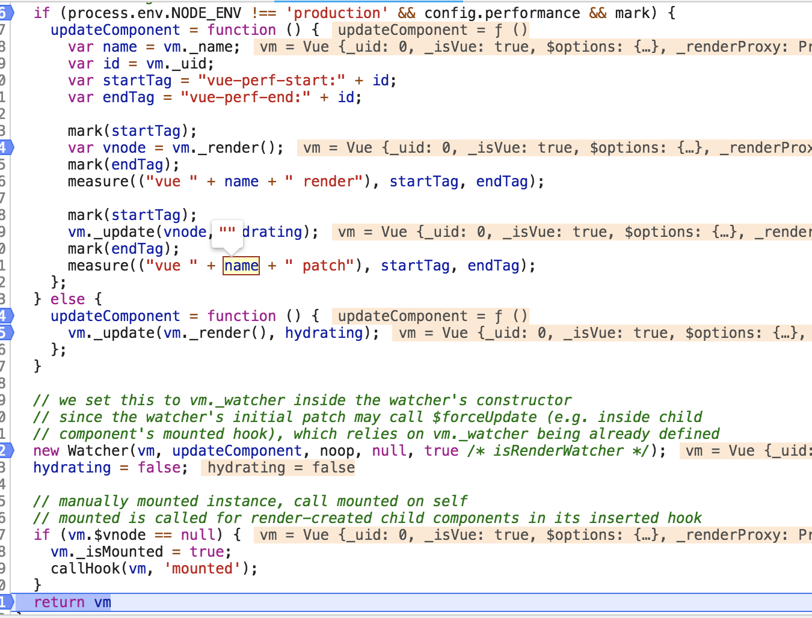
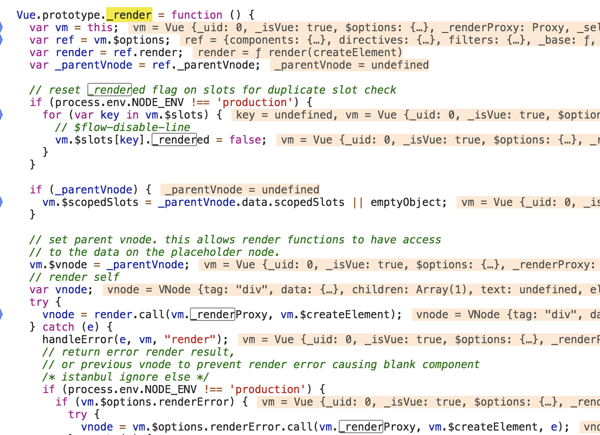
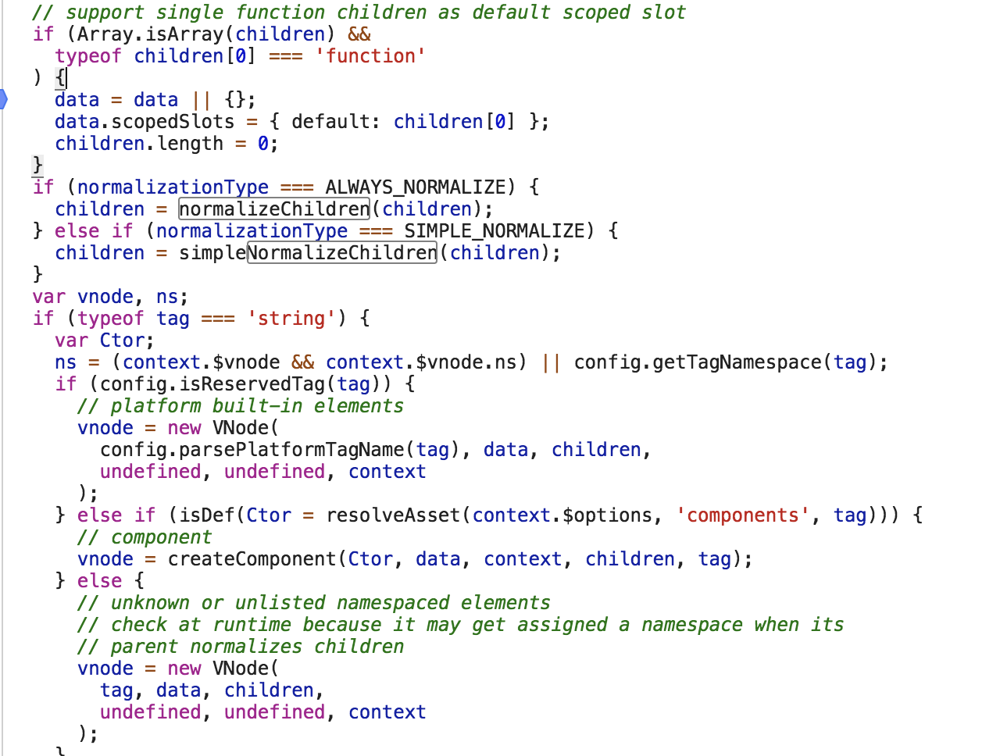
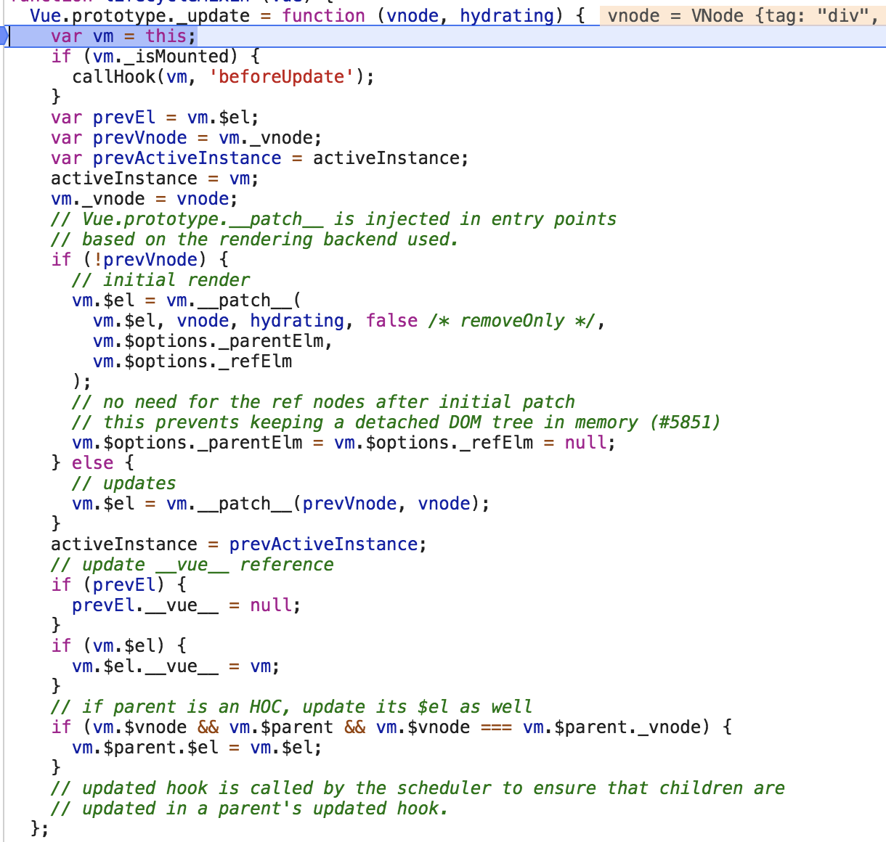

数据驱动是vue.js的一个重要的思想。数据驱动：视图根据数据驱动生成，我们不会通过直接修改dom来修改视图，会通过修改数据来完成对视图的修改。
Runtime-only: 需要借助类似于webpack的vue-loader来将.vue文件编译成JavaScript。因为是在编译阶段做的，所以只包含运行时的Vue.js代码，代码体积更轻便。
Runtime + compiler: 没有对代码做预编译。因为在Vue.js2.0中，最后渲染都是通过render函数，如果编写了template，则需要编译成render函数，而这个编译过程发生在运行时，所以需要带有编译器的版本，并且这个编译过程对性能会有一定的损耗。
1. new
new Vue()一个实例干了什么？

new Vue()后只会判断使用的语法对不对，然后就调用已经挂载到Vue原型上的_init方法(通过initMixin(Vue))，在initMixin()之前，Vue上只有一个构造函数外加一个proto（也就是Object所含有的）。
2. init
initMixin方法在Vue.prototype上挂载了一个_init方法
在initMixin方法中：先将options进行整合（具体先不管）；
后又进行了一系统的初始化：生命周期初始化（initLifecycle）、事件初始化（initEvents）、渲染（initRender）、callHook()、初始化数据（initState）以及一些其它的初始化(initInjections、initProvide)
其中initState方法中含有initData方法(其中含有一个proxy(vm, “_data”, key)，为data中数据项进行一个代理设置)

也就是利用了Object.defineProperty()方法来设置访问器属性，从而实现了直接修改类似this.message = 12也就是修改了this._data.message = 12
除了_data会使用proxy方法来进行一层设置代理，还会有_props，因此_data与_props里面定义的属性名称不能相同，不然就会出现覆盖的情况（写组件中经常就会遇见props中有一个a，data中也有一个a，则后期父组件修改a的值后，组件并不会跟着进行变化）
3. $mount
在initMixin方法的最后根据vm.$options.el是否存在来决定是否挂载
if (vm.$options.el) {
vm.$mount(vm.$options.el);
}
$mount方法是挂载在vue构造函数prototype上的，里面直接调用的是mountComponent方法，后期又定义了updateComponent函数（里面调用了vue上的 _update 方法， _update 方法中传递了vue的 _render 函数渲染出来的vnode以及hydrating），又新建了一个 渲染watcher(后期发生变化，进行更新的时候，会执行渲染watcher中的updateComponent方法，从而重新渲染了一次)

该过程主要做了：对options.render进行一个判断，看看是否书写了render函数，如果没有写，则对template进行解析，(其中没有template的时候，会根据getOuterHTML来得到模版字符串)，然后会根据template进行编译（使用compileToFunction），编译得到render函数以及staticRenderFns静态render函数。因为vue只认render函数。
有了render函数之后，就会调用mount.call(this,el,hydrating)，这个mount函数其实就是vue.prototype.$mount。然后就会执行上面的过程（$mount）
4. compile
函数compileToFunction来进行编译，拿到render渲染函数以及staticRenderFns静态render函数
5. render
_render方法是实例的一个私有方法，它用来把实例渲染成vnode（虚拟Node）。

vnode = render.call(vm. _renderProxy, vm.$createElement);
其中vm. _renderProxy是上下文，在生产环境下，就是vm实例，在开发环境下是一个Proxy实例。(会在init过程中有下面的代码)
1 | if (process.env.NODE_ENV !== 'production') { |
$createElemt在initRender中定义，initRender函数在init中执行。在$createElement函数中调用了createElement方法，createElement方法会返回一个VNode
6. vnode
产生的前提：浏览器中的DOM比较庞大，并且设计的比较复杂，频繁地去更新DOM，也会产生性能问题。Virtual DOM 使用js对象来描述DOM。
Virtual DOM除了数据结构的定义，映射到真实的DOM上，还需要经历VNode的create、diff、patch等过程。而Vue中的createElement就是VNode的create。

createElement方法调用的是 _createElement方法，在 _createElement方法中，对children做了normalize处理（也就是将children变成一维数组，涉及到的方法有：normalizeChildren，normalizeArrayChildren，simpleNormalizeChildren）
7. patch
通过 _render函数以及createElement函数拿到了VNode，如何渲染到真实DOM上呢？
通过vue中 _update方法，将VNode渲染成真实的DOM，此方法会在两种情况下被调用：首次渲染，数据更新。

其中，会走到vm. patch 方法1
Vue.prototype.__ patch __ = inBrowser ? patch : noop;
在服务器端是没有DOM这个概念的，所以不在客户端中，则是不需要渲染成真实DOM的。
调用patch方法的时候，第一个参数是真实的DOM，第二个参数是我们得到的VNode。通过patch方法中的createElm将VNode挂载到真实的DOM上，(如果有子节点，则递归调用createElm，没有子节点，则直接创建一个DOM)，最后通过insert方法插入真实DOM中（里面分情况调用了insertBefore与appendChild）。